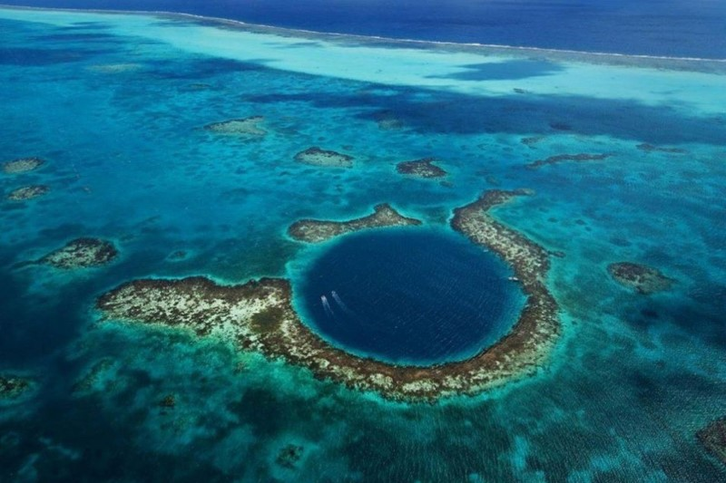

Os oceanos, por mais importantes que sejam, ainda representam uma grande incógnita, à medida que somente uma pequena parcela dele foi devidamente estudada e explorada. Não à toa, estima-se que 80% do oceano segue inexplorado, guardando mistérios que sequer temos ideia.
O fundo do mar possui ilhas, vulcões, cadeias de montanhas, fossas oceânicas e planícies abissais.
Curiosidades
Nas profundezas do oceano, existe uma pressão gigante. A 4 mil quilômetros de profundidade, a pressão é superior a 400 vezes a pressão na superfície, por exemplo.
A luz não é capaz de alcançar grandes profundidades no oceano.
Nas profundezas do oceano, há uma grande variedade de espécies que são sua própria fonte de luz, ou seja, produzem luz pelo seu próprio corpo.
Galerias
Imagens com Legendas:
O nível de 40 metros é a profundidade máxima permitida durante um mergulho seguro.Peixe-Lanterna recebe esse nome por ter a capacidade de emitir luz através da bioluminescência em órgãos localizados na cabeça, lateral do corpo e do rabo.

A Fossa das Marianas é o local mais profundo dos oceanos, atingindo uma profundidade de 10.984 metros.